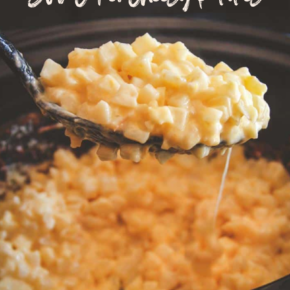

Cheesy Potatoes recipe

Description
Next time you’re having any part or get-together and need a super easy to prepare recipe that everyone is going to love, I’d definitely recommend making this 5 ingredient slow cooker cheesy potatoes recipe!
Ingredients
- 1 bag frozen diced potatoes (32 oz.)
- 1 cup sour cream
- 1 can cream of chicken soup (10.5oz. )
- 1 teaspoon garlic salt
- 2 cups cheddar jack cheese shredded
Steps
- Spray slow cooker with cooking spray (this is optional, but I like to do it.)
- Put frozen potatoes in a slow cooker.
- In a bowl combine sour cream, cream of chicken soup and garlic salt and stir to combine. Pour mixture on top of the potatoes.
- Add cheese to the slow cooker and stir everything together.
- Turn slow cooker on high and cook for 4 hours, then serve and enjoy
Back to home